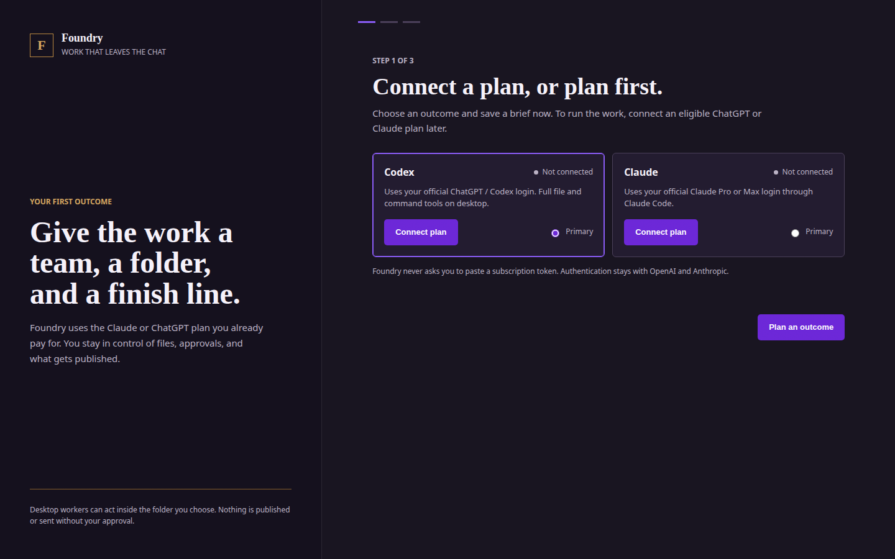

One angle becomes ten variations
Small rewrites look productive, but they do not test distinct reasons to buy.
For the paid-social work due this week
Give one product and one current offer a source-backed brief. Review three distinct reasons to buy, copy drafts, and a matching page outline in the same campaign file.
Windows pilot · checkout is not open Planned Pro price $29/month
The job behind the tab count
The idea is only one part. Someone still has to reconcile the offer, source the claim, compare angles, write the page handoff, and explain the decision to the person who approves it.
Small rewrites look productive, but they do not test distinct reasons to buy.
An ad can attract the right click and still send it to a page that answers another question.
The first clear list of missing proof appears when the creative is already built.
The first useful step
Bring the facts you already trust. Choose a result before the team starts. The work stays tied to one product, one offer, and the file you need to review.
Start with my briefReal product view
Foundry’s first workflow asks for the product, offer, audience, source material, constraints, and deadline. A maker drafts; a reviewer checks. The result is a structured file with three concepts, two primary-text drafts and three headlines per concept, plus a page outline and unresolved decisions.

Business case
The pack is meant to make creative review faster and more concrete. You can reject an unsupported claim, keep approved wording intact, and choose which angle deserves production. Foundry does not claim that the concepts will outperform your current ads.
Already use AI?
Claude Code can already research, write, edit, and produce files. Foundry adds a fixed ecommerce brief, offer and source checks, and a review of the actual result against named criteria. The pilot must prove that this saves operator effort against a strong native workflow.
Pilot offer
The web planner is free and works on a phone. It prepares a mission file for the Windows desktop pilot. No card is requested today.
Pro is planned at $29/month after a 14-day no-card feature trial that starts when you accept your first outcome. Provider subscriptions are separate. Paid checkout is not open.
Straight answers
The current campaign review workflow delivers concepts and copy for review. Image and video generation are not included in this first commercial workflow.
You can place permitted references in the chosen local workspace and describe what may be reused. Foundry does not copy another brand’s claims or invent results.
No. Approval is a product review step in this pilot, not permission to publish or spend.
No. Studio and Enterprise are future plans and are not sold in this pilot. Multi-user access and hosted sync require separate security and release work.
Export the mission file, then use it in the Windows desktop pilot after receiving access. The browser cannot run local agents or access your computer.
Give the work a finish line
One clear brief. One file to review. Your decision at the end.
Build my campaign brief